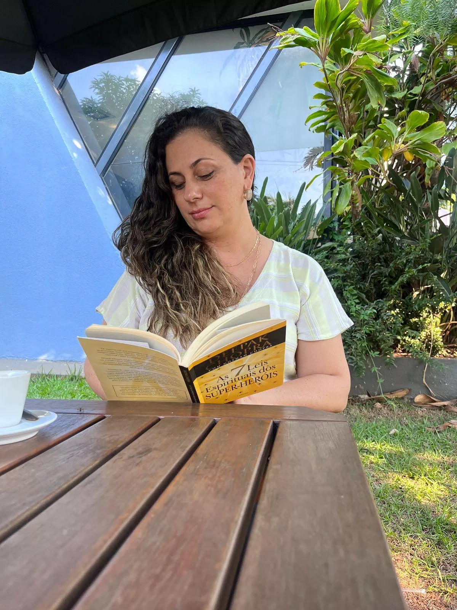
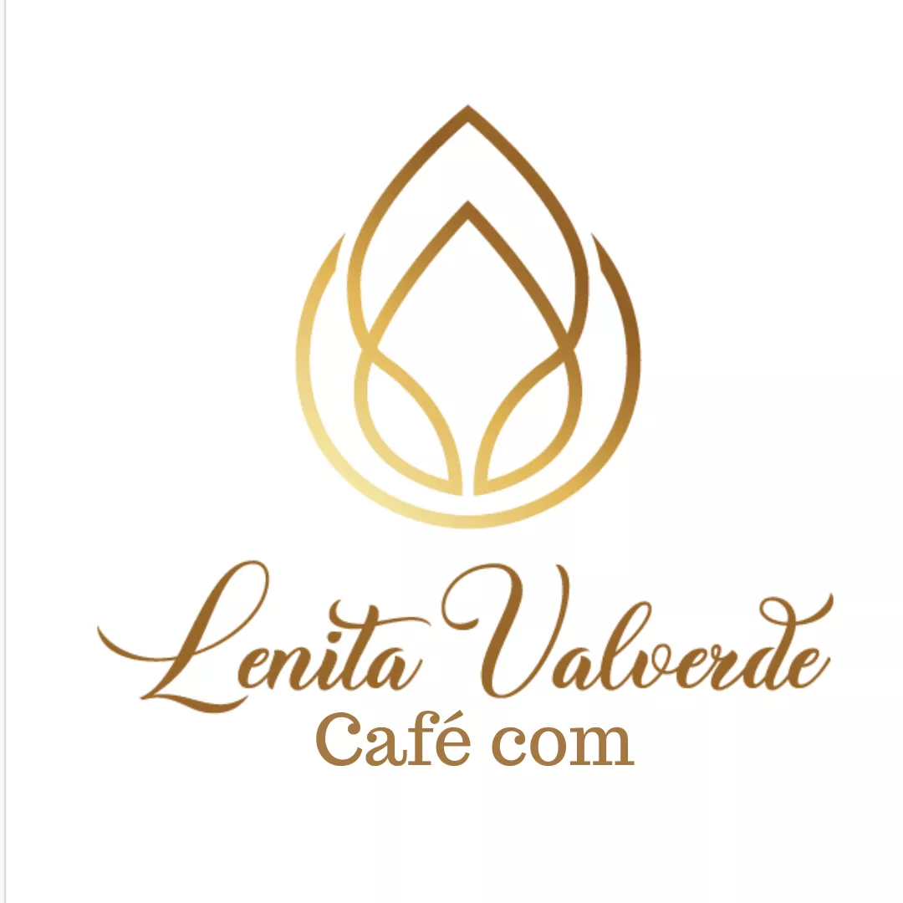

Encontros ao vivo
Reuniões no segundo e no quarto sábado do mês, com espaço para reflexões, trocas e temas que tocam a vida real.
Autoconhecimento • Clareza • Crescimento
A Comunidade Café com Lenita reúne mulheres que desejam olhar para a própria história com profundidade, trocar experiências e abrir novos caminhos em áreas como relacionamentos, saúde emocional, prosperidade e propósito.

Há fases da vida em que tudo pede pausa, presença e verdade. Café com Lenita nasce para acolher esse chamado com sensibilidade, reflexão e direção.
Sobre a Lenita
Lenita conduz encontros e reflexões voltados ao autoconhecimento, à transformação pessoal e ao crescimento emocional e espiritual. Seu trabalho valoriza a escuta, a profundidade e a ampliação da consciência, sempre em um ambiente humano, delicado e verdadeiro.
Aqui, o foco não está em fórmulas prontas, mas em criar espaço para que cada mulher reconheça seus movimentos internos, ressignifique o que a limita e se aproxime da vida que deseja construir.

Como funciona
A comunidade foi pensada para nutrir presença, aprendizado e conexão ao longo do tempo.
Reuniões no segundo e no quarto sábado do mês, com espaço para reflexões, trocas e temas que tocam a vida real.
As participantes são chamadas de Semeadoras porque cada encontro planta uma nova consciência que pode florescer no cotidiano.
Relacionamentos, saúde emocional, prosperidade, propósito e outros assuntos que convidam a um olhar mais profundo.
Aulas, reflexões e materiais disponíveis na área de membros para rever quando fizer sentido para você.
Leituras guiadas de livros e conteúdos que ampliam repertório, percepção e direção interna.
Um espaço de troca real, com acolhimento, identificação e apoio entre mulheres que também desejam transformar a própria vida.
A força da semente
A metáfora das Semeadoras ajuda a traduzir a essência da comunidade: cuidar da terra interior, reconhecer o tempo de cada ciclo e honrar pequenos movimentos que geram grandes transformações.
Apresentação em vídeo
Um vídeo que pode ser usado como ponto de conexão com quem deseja compreender melhor a proposta da comunidade.
Depoimentos
Nesta versão, deixei depoimentos-modelo para orientar o layout. Eles podem ser substituídos pelos depoimentos reais da comunidade.
“Entrei buscando respostas e encontrei um lugar onde pude me ouvir com mais verdade. Cada encontro me ajuda a olhar a vida com mais clareza.”
“A comunidade me acolheu num momento importante. É um espaço de troca profunda, sem julgamentos e com muito respeito à história de cada mulher.”
“Gosto da forma como os temas tocam a vida real. Sempre saio com reflexões que me acompanham durante a semana.”
Perguntas frequentes
Principalmente para mulheres adultas que desejam autoconhecimento, crescimento emocional e espiritual, clareza sobre a própria vida e novas perspectivas para seus desafios.
Em geral, no segundo e no quarto sábado do mês, com aulas, reflexões, convidados especiais e momentos de troca entre as participantes.
Sim. A proposta prevê conteúdos gravados disponíveis na área de membros, ampliando a experiência além dos encontros ao vivo.
Convite
Esta seção já está preparada para receber os links oficiais da Hotmart e do WhatsApp.